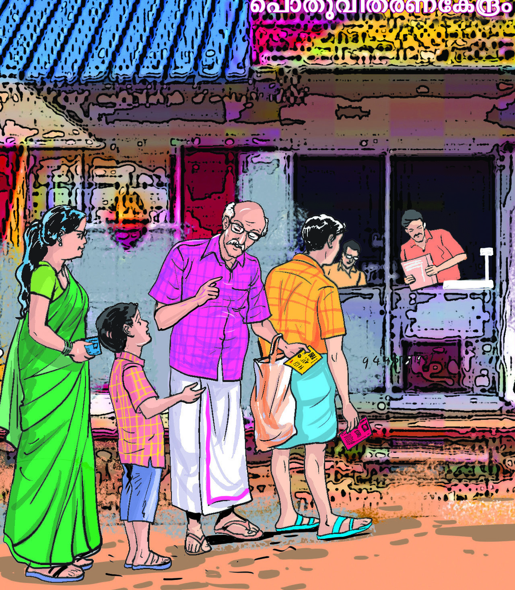
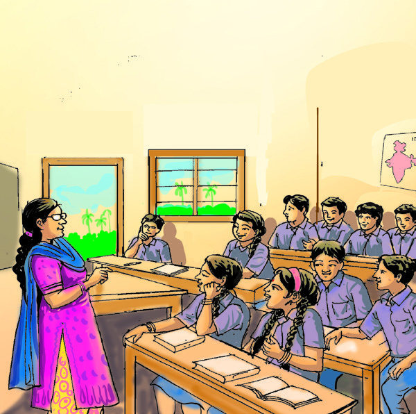
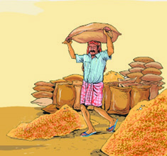
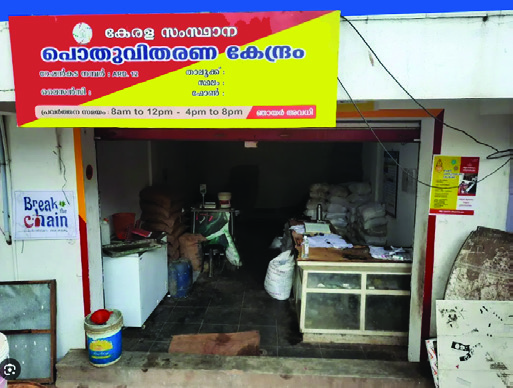
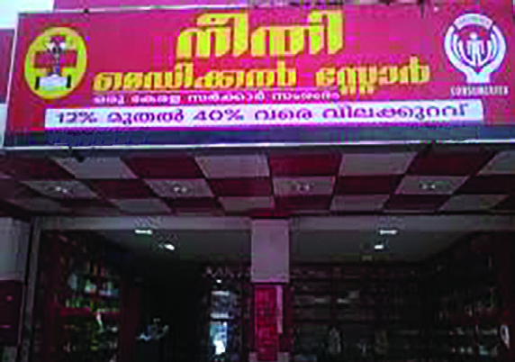
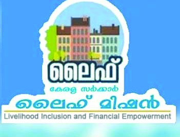
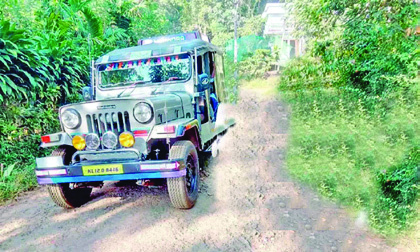

149
തുല്്യതയിലേക്ക്
9
കുടുംബങ്ങൾ തമ്മിലുളള വരുമാന വ്യത്യാസങ്ങൾക്ുള്ള കാരണങ്ങൾ എന്തെല്ാമാകാം?
മുത്തച്ഛാ എന്ുകൊsൊണ്ടാാണ്
ഓരോോരുത്തരുടെയും കൈയിൽ
വ്്യത്്യസ്ത നിറത്തിലുള്ള
കാാർഡുകൾ?
ഓരോോ കുടുംബത്തിന്റെയും
വരുമാാനം വ്്യത്്യസ്തമാായി
രിക്ുന്നത് എന്ുകൊsൊണ്ടാാണ്?
അതിന്
നിരവധി
കാരണങ്ങളുണ്്.
ഓരോോ കുടുംബത്തിന്റെയും
വരുമാാനം വ്്യത്്യസ്തമാായതു
കൊsൊണ്ടാാണ് വ്്യത്്യസ്ത
നിറത്തിലുള്ള കാാർഡുകൾ.
തുുല്യയതയിിലേ�ക്ക്്
Page 45




Page 46

150
സാമൂഹ്്യശാസ്ത്രം ക്ാസ് V
പീലിയുടെ ഗ്ാമത്ിൽ നിന്ന്് തിരിച്്ചെത്ിയ നീനുവിന്റെയും വിക്ിയുടെയും
ചിന്തകൾ ശ്രദ്ിക്കൂ.
നീനുവിന്റെ കുടുംബവരുമാന
സ്്രരോതസ്ുകൾ
വിക്കിയ
ുടെ കുടുംബവരുമാന
സ്്രരോതസ്ുകൾ
• പാാട്ടംം
•
• ബിസിിനസ്സ്
•
രണ്ട്് കൂൂട്ുകാരുടെയും ചിന്തകളുടെ വിശദീകരണം ശ്രദ്ധിച്ചല്്ലലോ.
ഇവരുടെ കുടുംബങ്ങളുടെ വരുമാനസ്ര
രോതസ്ുകളെപ്പറ്ി പറയുന്നില്ലേ?
രണ്ട്് കുടുംബത്ിന്റെയും വരുമാനസ്ര
രോതസ്ുകൾ പട്ികപ്പെടുത്തൂൂ.
‘എല്ലായിടത്ും പോ�ോകാനാകുമോ�ോ’ എന്ന ആശങ്കയോ�ോടുകൂടിയാണ്
ഞാൻ കൂട്ടുകാർക്്കകൊപ്ം പീലിയുടെ ഗ്ാമത്തിലേക്ക് പോ�ോയത്. പീലിയും
അമ്മയും അച്ഛനും അവരുടെ ഗ്ാമവും നിറഞ്ഞ സന്്തതോഷത്്തതോടെയാണ്
ഞങ്ങളെ സ്വാഗതം ചെയ്തത്. ഗ്ാമത്തിലെ കാഴ്ചകളെല്ാം എ്തു
രസമായിരുന്നു! പീലിയുടെ അച്ഛൻ കൃഷിചെയ്തുണ്ടാക്കുന്ന
സാധനങ്ങളാണ് അവരുടെ ഭക്ഷണത്ിനായി ഉപയോ�ോ
ഗിക്കുന്നത്.
നാട്ടിലെ
ത്തുമ്പ
പോൾ കഴിക്കുന്ന ഭക്ഷണത്ിന്റെ സ്വാദുണ്ടായിരുന്നു
അതിന്. പാട്ടത്ിന് നൽകിയിരിക്കുന്ന ഞങ്ങളുടെ കൃഷിഭൂമിയിൽ ഇനി
മുതൽ സ്വ്തമായി കൃഷിചെയ്യണമെന്ന്ന്ന് വീട്ടിൽ പറയണം. ഈ സർക്കാർ
ക്വാർട്ടേഴ്സിൽ നിന്്നുുംും നാട്ടിലേക്ക്
് താമസം മാറിയാൽ ഗ്ാമത്തിലെ
സന്്തതോഷംകൂടി എനിക്ക് ആസ്വദിക്കാമായിരുന്നു. അച്ഛനും അമ്മയ്കും
അവിടെ നിന്്നുുംും ഓഫീസിലേക്ക്
് പോ�ോകാമല്്ലലോ.
‘നഗരത്തിലെ സൗകര്്യങ്ങൾ ഒന്നുമില്ലാതെ എങ്ങനെ ഒരുദിവസം
കഴിച്ുകൂട്്ടുുംും എന്ന ചിന്തയോ�ോടുകൂടിയാണ് ഞാൻ പീലിയുടെ
ഗ്ാമത്തിലേക്ക് പോ�ോയത്. റെയ്്ഞ്ച
ും വൈഫൈയും ഒന്നുമില്ലാത്ത
പീലിയുടെ ഗ്ാമത്തിലെ ഉല്ലാസങ്ങൾ ഞാനും ആസ്വദിച്ു. അവിടെ
നിന്ന് മടങ്ങുമ്്പപോൾ നഗരജീവിതം മാത്ം രസകരമാണെ
ന്ന എന്റെ
ധാരണ പൂർണ്ണമായും മാറി. അവിടത്തെ ഭക്ഷണത്ിന്റെ സ്വാദും
ഇവിടത്തെ പായ്ക്കറ്് ഭക്ഷണത്ിന്റെ സ്വാദും വ്്യത്്യസ്തമാണ്. നഗരത്തിലെ
അപ്ാർട്്ട്മമെന്റിൽ ബിസിനസ്ുകാരായ അച്ഛനമ്മമാർക്്കകൊപ്ം തിരക്കിട്ട
ജീവിതമാണ് ഞങ്ങളുടേത്. സർക്കാർ സർവീസിൽ നിന്ന് വിരമിച്ചശേഷം
മുത്തച്ഛൻ കൂടി ഇവിടേക്ക് വന്നപ്്പപോൾ എനിക്കത് ആശ്വവാസമായി.’
Page 47
151
തുല്്യതയിലേക്ക്
രണ്ട്് കുടുംബത്ിന്റെയും വരുമാനം ഒരുപോ�ോലെയാണോ�ോ?
കുടുംബം
മാസവരുമാനം (ഏകദേശം)
വിക്കി
3,00,000 - 5,00,000 (മൂന്ന് ലക്ഷത്ിനും അഞ്ച് ലക്ഷത്ിനും ഇടയിൽ)
നീനു
1,00,000 - 3,00,000 (ഒരു ലക്ഷത്ിനും മൂന്ന് ലക്ഷത്ിനും ഇടയിൽ)
രണ്ട്് കുടുംബത്ിന്റെയും മാസവരുമാനത്ിന്റെ ഏകദേശ കണക്ാണ്് ചുവടെ
പട്ികയിൽ നൽകിയിരിക്കുന്നത്്.
കുടുംബം
മാസവരുമാനം (ഏകദേശം)
A
4,00,000 - 5,00,000 (നാല് ലക്ഷത്ിനും അഞ്ച് ലക്ഷത്ിനും ഇടയിൽ)
B
3,00,000-4,00,000 (മൂന്ന് ലക്ഷത്ിനും നാല് ലക്ഷത്ിനും ഇടയിൽ)
C
2,00,000-3,00,000 (രണ്് ലക്ഷത്ിനും മൂന്ന് ലക്ഷത്ിനും ഇടയിൽ)
D
1,00,000-2,00,000 (ഒരു ലക്ഷത്ിനും രണ്് ലക്ഷത്ിനും ഇടയിൽ)
E
50,000-1,00,000 (അൻപതിനായിരത്ിനും ഒരു ലക്ഷത്ിനും ഇടയിൽ)
F
25,000- 50,000 (ഇരുപത്തയ്യായിരത്ിനും
അൻപതിനായിരത്ിനും ഇടയിൽ)
G
10,000-25,000 (പതിനായിരത്ിനും ഇരുപത്തയ്യായിരത്ിനും ഇടയിൽ)
ഒരു പഞ്ചായ
ത്തിലെ വിവിധ കുടുംബങ്ങളുടെ ഏകദേശ മാസവരുമാന
കണക്കാണ് പട്ടികയിൽ നൽകിയിട്ടുളളത
്. പട്ടിക നിരീക്ഷിച്് ഏറ്റവും
ഉയർന്ന വരുമാനമുള്ള കുടുംബവും ഏറ്റവും താഴ്ന്്ന്ന
വരുമാനമുളള
കുടുംബവും ഏതാണെന്ന്
ന്ന് എഴുതുക.
• ഏറ്റവുംം� ഉയർന്ന വരുമാനമുള്ള കുടും�ംബം ........................
• ഏറ്റവുംം� താഴ്ന്ന വരുമാനമുള്ള കുടും�ംബം ........................
വിവിധ കുടുംബങ്ങളുടെ വരുമാനം (ഏകദേശം)
കുടുംബവരുമാന വ്്യത്്യയാസത്ിന്റെ കാരണങ്ങൾ
• തൊ�ൊഴിിലിൽ നിന്നുള്ള വരുമാനത്തിന്റെ� വ്യയത്യാാ�സം.
• വരുമാനസ്രോ�ോതസ്സുകളുടെെ വ്യയത്യാാ�സം.
Page 48




152
സാമൂഹ്്യശാസ്ത്രം ക്ാസ് V
തൊ�ൊഴിലിൽ നിന്നുള്ള വരുമാനത്ിന്റെ വ്്യത്്യയാസം
മുകളിൽ നൽകിയിരിക്കുന്ന ചിത്രങ്ങളിൽ വിവിധ വ്യക്ികൾ ഏർപ്പെട്ിരിക്കുന്ന
തൊ�ൊഴിലുകൾ ഏതെല്ാമാണ്്?
•
•
•
•
വിവിധ തൊ�ൊഴിലുകളിൽ ഏർപ്പെട്ിരിക്കുന്നവർക്ക് ഒരേ വരുമാനമാണോ�ോ ലഭിക്ുക?
തൊ�ൊഴിലിന്റെ സ്വഭാവമനുസരിച്ച്് അതിൽ നിന്ന്് കിട്ടുന്ന വരുമാനവും വ്യത്യസ്തമാകുന്ു.
വരുമാനസ്്രരോതസ്ുകളുടെ വ്്യത്്യയാസം
വരുമാനസ്ര
രോതസ്ുകളിൽ ഉണ്ാകുന്ന വ്യത്യാസം കുടുംബവരുമാനം വ്യത്യാസ
പ്പെടുന്നതിന്റെ പ്രധാന കാരണമാണ്്. ബാങ്ക് നിക്ഷേപം, ഓഹരി നിക്ഷേപം,
ആസ്തികൾ എന്ിവ വിവിധ വരുമാനസ്ര
രോതസ്ുകളാണ്്. വരുമാനസ്ര
രോതസ്സിലുള്ള
വ്യത്യാസമനുസരിച്ച്് വരുമാനത്തിലും വ്യത്യാസമുണ്ാകും. ഉയർന്ന വരുമാനമുളളവർക്ക്
കൂൂടുതൽ ആവശ്യങ്ങൾ നിറവേറ്ാൻ കഴിയുന്ു. എന്ാൽ, താഴ്്ന്്ന വരുമാനമുള്ളവർക്ക്
അവരുടെ അടിസ്ാന ആവശ്യങ്ങൾപോ�ോലും പല അവസരങ്ങളിലും നിറവേറ്ാൻ
സാധിക്കാതെവരുന്ു.
Page 49


153
തുല്്യതയിലേക്ക്
നിങ്ങളുടെ കുടുംബത്ിന്റെ ആവശ്്യങ്ങൾ നിറവേറ്ുന്നതിൽ കുടുംബവരുമാനം
എത്രത്്തതോളം സ്വാധീനം ചെലുത്തുന്നുവെന്ന്ന്ന് ചർച്ചചെയ്യൂ.
ഉയർന്ന
വരുമാനമുളള
കുടുംബങ്ങൾ
താഴ്ന്്ന്ന
വരുമാനമുളള
കുടുംബങ്ങൾ
ഇടത്തരം
വരുമാനമുളള
കുടുംബങ്ങൾ
വരുമാനത്ിന്റെ ലഭ്്യതയുടെ അടിസ്ാനത്ിൽ കുടുംബങ്ങളെ മൂൂന്ായി തരംതിരിക്ാം.
തൊ�ൊഴിലിൽ നിന്ും മറ്റ്് വരുമാനസ്ര
രോതസ്ുകളിൽ നിന്ും ലഭിക്കുന്ന വരുമാനത്ിൽ
വ്യത്യാസമുളളതായി നിങ്ങൾ ശ്രദ്ധിച്ചില്ലേ. തൊ�ൊഴിലിലും വരുമാനത്തിലുമുള്ള അസമത്വം
സമൂൂഹത്ിൽ സാമ്പത്ിക അസമത്വത്ിന്് കാരണമാകുന്ു. ഒരു സമൂൂഹത്തിലെ
വിഭവങ്ങൾ തുല്്യമല്ലാത്ത രീതിയിൽ വിതരണം ചെയ്യുമ്്പപോഴാണ്് അസമത്വം
ഉണ്ാകുന്നത്്.
സാ്പത്ിക അസമത്വം
സാമ്പത്തിക അസമത്വംം� എന്നത് ഒരു സമൂൂഹത്തിലെ� വ്യക്തിികൾ
അല്ലെ�ങ്കിൽ സംഘങ്ങൾക്കിടയിിൽ സമ്പത്ത്ത്്, വരുമാനം അല്ലെ�ങ്കിൽ
വിഭവങ്ങൾ എന്നിവയുടെെ അസമമായ വിതരണത്തെ� സൂചിപ്പിക്കുന്നു. ഇത്
പലപ്പോ�ോഴും�ം അവസരങ്ങൾ, വിദ്യാ�ാഭ്യാ�ാസം, തൊ�ൊഴിിൽ, ആരോ�ോഗ്യസംരക്ഷണം, രാഷ്ട്രീീയ
അധികാരം എന്നിവയിിലേ�ക്കുുള്ള പ്രാാപ്യതയിിലെ� അസമത്വവത്തിലേ�ക്ക്് നയിിക്കുന്നു.
വിഭവങ്ങളുടെെയുംം� അവസരങ്ങളുടെെയുംം� കൂടുതൽ തുുല്യയമായ വിതരണം ലക്ഷ്യമിട്ടുള്ള
വിവിധ നയങ്ങളിലൂടെെയുംം� സംരംഭങ്ങളിലൂടെെയുംം� സാമ്പത്തിക അസമത്വംം� പരിിഹരിക്കാൻ
സർക്കാർ ശ്രമിക്കുന്നു.
മിശ്രഭോ�ോജനം
സാമ്പത്ിക അസമത്വം മാത്രമാണോ�ോ സമൂൂഹത്ിൽ കാണുന്നത്്?
കുറിപ്പുകൾ വായിക്ാം.
സഹോ�ോദരൻ അയ്യപ്പൻ
ജീവൻ നിലനിിർത്തുന്നതിന് അനിവാര്യമായ ആഹാരം
കഴിക്കുന്ന കാര്യത്തിൽ നിലനിിന്നിരുന്ന വിവേ�ചനം അവ
സാനിപ്പിക്കുന്നതിനുവേ�ണ്ടിയുള്ള നിരവധി സമരങ്ങൾ പത്തൊ�ൊമ്പതാം
നൂറ്റാണ്ടിന്റെ� ആരംഭം മുതൽ കേ�രളത്തിൽ നടക്കുന്നുണ്ടായിിരുന്നു.
അയ്യാ വൈൈകുണ്ഠസ്വാാ�മികൾ സ്ഥാാപിച്ച ‘സമത്വവസമാാജ’ത്തിന്റെ�
നേ�തൃത്വവത്തിൽ നടന്ന ‘സമപന്തി ഭോ�ോജനം’ മുതൽ നിരവധി
സമരങ്ങളാണ് ഇത്തരത്തിൽ നടന്നിട്ടുള്ളത്. ഇതിൽ ഏറ്റവുംം�
ശ്രദ്ധേേŗയമാായ ഒന്നാണ് 1917 മെെയ്് 29 ന് എറണാകുളം ജില്ലയിിലെ�
ചെ�റായിിയിിൽ ‘സഹോ�ോ
ദരൻ’ പത്രത്തിന്റെ� പത്രാധിപരാായ കെ�. അയ്യപ്പൻ
സംഘടിപ്പിച്ച മിശ്രഭോ�ോജനം. ഇതുുകാരണം അദ്ദേേŔഹത്തിന് കൊ�ൊടിയ
മർദനവുംം� ഭീഷണിയുംം� നേ�രിടേ�ണ്ടി വന്നു. വിവേ�ചനത്തിനെ�തിരായ
സമരത്തിലെ� ഒരു നിർണ്ണായക സംഭവമായിിരുന്നു ഇത്.
മിശ്രഭോ�ോജനം
അയ്ാ വൈകുണ്ഠസ്വാമികൾ
Page 50


154
സാമൂഹ്്യശാസ്ത്രം ക്ാസ് V
ഏതൊ�ൊക്കെ തരത്തിലുള്ള അസമത്വങ്ങളാണ്് ഇവിടെ പ്രതിപാദിച്ചിട്ുള്ളത്്?
•
സാമൂൂഹികമായി എല്ാ ജനവിഭാഗങ്ങളും തുല്്യരല്ലാത്ത അവസ്ഥയാണ്് സാമൂൂഹിക
അസമത്വം. പദവി, അവകാശങ്ങൾ, അവസരങ്ങൾ എന്ിവയിൽ തുല്്യമല്ലാത്ത
അവസ്ഥ സാമൂൂഹിക അസമത്വം സൃഷ്ിക്ുന്ു.
വസ്ത്രധാരണാവകാശത്തിനുവേ�ണ്ടി തെ�ക്കൻ തിരുവിതാംകൂറിലെ� സ്ത്രീകൾ
പത്തൊ�ൊമ്പതാം നൂറ്റാണ്ടിന്റെ� ആദ്യം�ം മുതൽ നടത്തിവന്ന സമരമാണ് മേ�ൽമുണ്ട്
സമരം. ദീർഘകാലത്തെ�
സമരത്തിനുേ�േശഷം ജാതി-മത വ്യത്യാാ�സമില്ലാതെ� എല്ലാവർക്കുംം�
ഇഷ്ടപ്പെ�ട്ട വസ്ത്രം ധരിക്കാനുള്ള അവകാശം നൽകിക്കൊ�ൊണ്ട്് തിരുവിതാംകൂർ സർക്കാർ
വിളംബരം പ്രസിിദ്ധപ്പെ�ടുത്തി. എങ്കിലുംം� ജാത്യാാ�ചാരത്തിന്റെ�പേ�രി
ിൽ പിന്നീടും�ം ഇഷ്ടപ്പെ�ട്ട
വസ്ത്രം ധരിക്കാൻ പലർക്കുംം� കഴിഞ്ഞിരുന്നില്ല.
സാമൂഹിക അസമത്വം
സാമൂഹിക അസമത്വംം� എന്നത് ഒരു സമൂൂഹത്തിനുള്ളിലെ� വിഭവങ്ങൾ,
അവസരങ്ങൾ, പദവികൾ എന്നിവയുടെെ അസമമായ വിതരണത്തെ�
സൂചിപ്പിക്കുന്നു. വരുമാനത്തിലെ� അസമത്വംം�, സമ്പത്തിലെ� അസമത്വംം�,
വിദ്യാ�ാഭ്യാ�ാസത്തിനുംം� ആരോ�ോഗ്യപരിിപാാലനത്തിനുംം� അവസരമില്ലായ്മ, വംശം, ജാതി,
ലിംം�ഗപദവി എന്നിവയെ� അടിസ്ഥാാനമാക്കിയുളള വിവേ�ചനം, രാഷ്ട്രീീയ-സാമൂഹിക
സ്ഥാാപനങ്ങളിലെ� അസമമായ പ്രാാതിനിധ്യംം� എന്നിങ്ങനെ� വിവിധ രൂപങ്ങളിൽ സാമൂഹിക
അസമത്വംം� പ്രകടമാകുന്നു. സാമൂഹിക അസമത്വവത്തെ� ഉന്മൂൂലനംം ചെ�യ്യുന്നതിനായിി
സമൂൂഹത്തിലെ� എല്ലാ അംഗങ്ങൾക്കുംം� തുുല്യയത, നീതി, തുുല്യയ അവസരങ്ങൾ എന്നിവ
ലക്ഷ്യമിട്ടുളള നയങ്ങൾ സർക്കാർ രൂപീകരിക്കുന്നു.
ജാതി-മത വ്യത്യാാ�സമില്ലാതെ� എല്ലാ വിഭാഗം
വിദ്യാ�ാർഥിികൾക്കുംം� നാലാം� ക്ലാാസുവരെെയുുള്ള വിദ്യാ�ാഭ്യാ�ാസം
തിരുവിതാംകൂർ സർക്കാർ സൗജന്യമായിി നൽകിയിിരുന്നു.
എന്നിട്ടും�ം മേ�ൽജാതിക്കാർ എന്ന് കരുതപ്പെ�ട്ടിരുന്ന വിഭാഗത്തിലെ�
സ്കൂൂളധികൃതർ കീഴ്ജാതിക്കാർ എന്ന് കരുതപ്പെ�ട്ടിരുന്ന
വിഭാഗത്തിലെ� കുട്ടികൾക്ക്് പ്രവേ�
ശനം നൽകിയിിരുന്നില്ല.
ഇതിൽ പ്രതിിഷേ�ധിച്ചാണ് സർക്കാരുത്തരവ് നടപ്പിലാക്കണ
മെെന്നാവശ്യപ്പെ�ട്ടുകൊ�ൊണ്ട്് പഞ്ചമിയെ�ന്ന്് പേ�രുുള്ള ദളിത് ബാലികയുടെെ കൈൈപിടിച്ച്
ഊരൂട്ടമ്പലംം സ്കൂൂളിൽ ചെ�ന്ന് പ്രവേ�
ശനം നൽകാൻ അയ്യങ്കാളി ആവശ്യപ്പെ�ട്ടത്്. പഞ്ചമിക്ക്്
പ്രവേ�
ശനം നൽകാൻ അധികാരികൾ നിർബന്ധിിതരാായെ�ങ്കിിലുംം� അന്നുരാത്രി തന്നെ�
മേ�ൽജാതിക്കാർ സ്കൂൂളിന് തീയിിട്ടു. കത്തിക്കരിിഞ്ഞ ബഞ്ചിന്റെ�യുംം� മറ്റുപകരണങ്ങളുടെെയുംം�
അവശേ�ഷിപ്പുകൾ സ്കൂൂൾ മ്യൂ�ൂസിിയത്തിൽ സൂക്ഷിച്ചിട്ടുണ്ട്. ആ സ്കൂൂളിനാണ് അയ്യങ്കാളി-
പഞ്ചമി സ്മാരക സ്കൂൂൾ എന്ന് പേ�രിിട്ടിരിക്കുന്നത്.
മേൽമുണ്് സമരം
അയ്യങ്കാളി-പഞ്ചമി സ്മാരക വിദ്്യയാലയം
Page 51

155
തുല്്യതയിലേക്ക്
സാമൂൂഹിക അസമത്വത്ിന്് ഇടയാക്കുന്ന കാരണങ്ങളും അവയെ സ്വാധീനിക്കുന്ന
ഘടകങ്ങളും എന്്തതൊക്കെയാണെ
ന്ന്് പരിശോധിക്ാം.
എന്തുകൊ�ൊണ്ാണ് ചില സാമൂഹിക വിഭാഗങ്ങളിൽപ്പെട്ടവർക്ക്
വിവേചനം നേരിടേണ്ി വന്നത്? സമാനമായ സാഹചര്്യങ്ങൾ
സമൂഹത്ിൽ നിലനിൽക്കുന്നുണ്്ടടോ
? ചർച്ചചെയ്യൂ.
സാമൂഹിക അസമത്്വത്ിനുള്ള
കാരണങ്ങൾ
സ്വാധീനിക്ുന്ന ഘടകങ്ങൾ
സാ്പത്ിക അസമത്വം
• വരുമാനത്തിലെ� വ്യത്യാാ�സം
• തൊ�ൊഴിിലില്ലായ്മ
• വിഭവങ്ങളുടെെ ലഭ്യയതക്കുറവ്
• കൂലി/ശമ്പളത്തിലെ� വ്യത്യാാ�സം
വിദ്്യയാഭ്്യയാസ അസമത്വം
• ഗുണനിലവാാരമുളള വിദ്യാ�ാഭ്യാ�ാസത്തിന്റെ�
അഭാവം
• പരിിമിതമാായ വിദ്യാ�ാഭ്യാ�ാസ അവസരങ്ങൾ
സാമൂഹിക
ഘടനകൾക്കുള്ളിലെ
അസമത്വം
• ജാതി, മതം, വംശം, ലിംം�ഗപദവി, ഭിന്നശേ�ഷി
എന്നിവ അടിസ്ഥാനമാക്കിയ
ുളള വിവേചനം
• സാമൂഹിക വഴക്കങ്ങൾ സൃഷ്ടിക്കുന്ന അസമത്വംം�
ഭൂമിശാസ്ത്രപരമായ
അസമാനതകൾ
• ഗ്രാമ-നഗര വ്യത്യാാ�സം
• വിഭവങ്ങളുടെെ ലഭ്യയതക്കുറവ്
ചരിത്രപരമായ ഘടകങ്ങൾ
•
കോ�ോളനിവൽക്കരണം
•
അടിമത്തം
•
അടിച്ചമർത്തലുകൾ
സാമൂഹിക അസമത്വത്ിന്റെ കാരണങ്ങളും അവയെ സ്വാധീനിക്കുന്ന
ഘടകങ്ങളും ക്ലാസ
ിൽ ചർച്ചചെയ്ത് കുറിപ്് തയ്യായ്യാറാക്കൂ.
Page 52

156
സാമൂഹ്്യശാസ്ത്രം ക്ാസ് V
മുകളിൽ കൊ�ൊടുത്ിരിക്കുന്ന രണ്ട്് സാഹചര്യങ്ങളും ശ്രദ്ിക്കൂ. അവർ നേരിടുന്ന
പ്രശ്നങ്ങൾ എന്്തതൊക്കെയാണ്്?
•
ഇവയെല്ാം പരിഹരിക്കേണ്ടതല്ലേ? ശാന്തിയുടെയും ആകാശിന്റെയും പ്രശ്നങ്ങൾ
പരിഹരിക്കുന്നതോ�ോടൊ�ൊപ്പംപ്പം സാമൂൂഹിക അസമത്വം നേരിടുന്ന എല്ാ ജനവിഭാഗങ്ങളുടെയും
പ്രശ്നങ്ങളും പരിഹരിക്കേണ്ടതുണ്ട്്.
എല്ാ ജനവിഭാഗങ്ങളുടെയും അടിസ്ാന ആവശ്യങ്ങൾ നിറവേറ്റപ്പെടുമ്്പപോഴാണ്്
സാമൂൂഹികപുരോ�ോഗതി സാധ്യമാകുന്നത്്. അതിനുളള സൗകര്യങ്ങളും സാഹചര്യങ്ങളും
സൃഷ്ടിക്കേണ്ടതുണ്ട്്. സാമൂൂഹിക അസമത്വത്തെ അഭിസംബോ�ോധന ചെയ്യുന്നതിന്്
സമഗ്രമായ നയപരിഷ്കരണങ്ങൾ ആവശ്യമാണ്്. ഇതിനായി വിദ്യയാഭ്യാസസംരംഭങ്ങൾ,
സാമൂൂഹികനീതിക്ും തുല്്യാവകാശങ്ങൾക്ും വേണ്ിയുള്ള പദ്ധതികൾ എന്ിവ
സർക്ാർ ആവിഷ്്കരിച്ച്് നടപ്പിലാക്ിവരുന്ു.
സാമൂഹിക-സാ്പത്ിക അസമത്വം പരിഹരിക്കുന്നതിനുളള സർക്കാർ
ഇടപെടലുകൾ
അസമത്വം നേരിടുന്ന ജനവിഭാഗങ്ങളുടെ ഉന്നമനത്ിനു വേണ്ി സർക്ാർ
വിവിധപദ്ധതികൾ നടപ്പിലാക്ിവരുന്ു. ഭക്ഷണം, പാർപ്പിടം, വിദ്യയാഭ്യാസം,
ആരോ�ോഗ്യസുരക്ഷ, മറ്റ്് അടിസ്ാനസൗകര്യങ്ങൾ എന്ിവ എല്ാ വിഭാഗം ജനങ്ങൾക്ും
ലഭ്്യമാക്കുന്നതിനുവേണ്ി കേന്ദ്ര-സംസ്ാന സർക്ാരുകൾ വിവിധ പദ്ധതികൾ
നടപ്പിലാക്ുന്ു. അവ നമുക്ക് പരിചയപ്പെടാം.
ക്ഷേമപെൻഷനുകൾ
സാമൂൂഹിക-സാമ്പത്ിക പിന്ാക്ാവസ്ഥ നേരിടുന്ന ജനവിഭാഗങ്ങൾക്ും
ദുർബലവിഭാഗങ്ങൾക്ും സാമ്പത്ികസഹായം നൽകുന്നതിന്് ലക്ഷഷ്യ്യമിട്ിട്ുള്ള
സാമൂൂഹികസുരക്ഷാപദ്ധതികളാണ്് ക്ഷേമപെ
ൻഷനുകൾ. മുതിർന്നപൗരർ,
ഭിന്നശേഷിക്ാർ, വിധവകൾ, 50 വയസ്ിന്് മുകളിലുള്ള അവിവാഹിതരായ സ്തീകൾ,
കർഷകത്്തതൊഴിലാളികൾ മുതലായവരാണ്് ക്ഷേമപെ
ൻഷനുകളുടെ പ്രധാന
ഗുണഭോ�ോക്താക്കൾ.
സർക്ാർ നടപ്പിലാക്കുന്ന വിവിധ ക്ഷേമപെൻഷനുകൾ ഏതൊ�ൊക്കെയാണ്്?
• കർഷകത്തൊ�ൊഴിിലാളി പെ�ൻഷൻ
• വാർധക്യയകാാല പെ�ൻഷൻ
ശാ്തി അഞ്്ചാാംക്ലാസ്സിലാണ് പഠിക്കുന്നത്. അവൾക്ക് അച്ഛനും അമ്മയും
ചേച്ചിയും അനുജനുമുണ്്. തീരപ്രദേ
ശത്് താമസിക്കുന്ന അവർ കടലാക്രമണം
രൂക്ഷമാകുമ്്പപോൾ ഭീതിയോ�ോടെയ
ാണ് കഴിയുന്നത്. കെട്ടുറപ്ുള്ള വീടില്ലാത്തതാണ്
അവർ നേരിടുന്ന ഏറ്റവും വലിയ പ്രശ്ം.
ആകാശും കുടുംബവും മലയോ�ോ
രമേഖലയിലാണ് താമസിക്കുന്നത്. വാഹന
സൗകര്്യമില്ലാത്തതിനാൽ ആകാശിനും സഹേ
ാദരിമാർക്്കുുംും സ്കൂള
ിൽ പോ�ോകുന്നതിന്
പ്രയാസമാണ്.
Page 53





157
തുല്്യതയിലേക്ക്
സ്്കകോളർഷിപ്ുകൾ
വിദ്യയാഭ്യാസ ആവശ്യത്ിന്് വിദ്യാർഥികൾക്ക് നിരവധി സ്ക
കോളർഷിപ്പുകൾ
ഏർപ്പെടുത്ിയിട്ുണ്ട്്. വിദ്യാർഥികൾക്ക് ലഭിക്കുന്ന സ്ക
കോളർഷിപ്പുകൾ ഏതൊ�ൊക്കെയെന്ന്്
കണ്ടെത്ി പട്ികപ്പെടുത്തൂൂ.
• പ്രീ മെെട്രിിക്്് സ്കോ�ോളർഷിപ്പ്്്
സാമൂൂഹിക-സാമ്പത്ിക അസമത്വം പരിഹരിക്ാൻ ഇവ കൂൂടാതെ മറ്റേതെല്ാം
പദ്ധതികൾ സർക്ാർ ആവിഷ്്കരിച്ച്് നടപ്പിലാക്ിവരുന്ുണ്ട്്?
ചിത്രങ്ങൾ ശ്രദ്ധിച്ചില്ലേ. അവശ്യസാധനങ്ങൾ വിലക്ുറവിൽ ലഭ്്യമാക്കുന്ന
സംവിധാനങ്ങളാണ്് പൊ�ൊതുവിതരണകേന്ദ്രംന്ദ്രം, മാവേലി സ്റ്റോർ, നീതി സ്റ്റോർ എന്ിവ.
സർക്ാർ നൽകുന്ന സബ്്സിഡിയോ�ോടെ ഈ കേന്ദ്രങ്ങളിൽ നിന്ന്് വിലക്ുറവിൽ
നമുക്ക് സാധനങ്ങൾ ലഭിക്ുന്ു.
സബ്സിഡി
വ്യക്തിികൾക്കോ�ോ സ്ഥാാപനങ്ങൾക്കോ�ോ മാനദണ്ഡങ്ങൾക്കനുുസരിിച്ച് സർക്കാർ
നൽകുന്ന സാമ്പത്തിക ആനുകൂല്യയമോ�ോ പിന്തുണയോ�ോ ആണ് സബ്
്സിിഡി. നേ�രിട്ടോ�ോ
അല്ലാതെ�യോ�ോ സബ്
്സിിഡി നൽകാം. പണമായിി നൽകുന്ന പിന്തുണ നേ�രിട്ടുളള
സബ്
്സിിഡിയെ� സൂചിപ്പിക്കുന്നു. നികുതി നിരക്ക്് കുറയ്ക്കുക, വായ്പകൾക്ക്് കുറഞ്ഞ
പലിിശ ഈടാക്കുക എന്നിവ പരോ�ോ
ക്ഷ സബ്
്സിിഡിയിിൽ പെ�ടുുന്നു.
ദാരിദ്രര്യലഘൂൂകരണത്ിനും സാമൂൂഹിക അസമത്വം കുറയ്ക്കുന്നതിനുമായി നിരവധി
പദ്ധതികളും പരിപാടികളും കേന്ദ്ര-സംസ്ാന സർക്ാരുകളും തദ്ദേശസ്വയംഭരണ
സ്ാപനങ്ങളും നടപ്പിലാക്ിവരുന്ുണ്ട്്. അവയിൽ ചിലത്് നമുക്ക് പരിചയപ്പെടാം.
മഹാത്ാഗാന്ധി ദേശീയ ഗ്ാമീണ തൊ�ൊഴിലുറപ്പുപദ്ധതി
ഗ്ാമീണമേഖലയിൽ അധിവസിക്കുന്ന ഏതൊ�ൊരു കുടുംബത്ിനും
ഒരു സാമ്പത്ികവർഷം 100 ദിവസത്ിൽ കുറയാത്ത അവിദഗ്്ധ
കായികതൊ�ൊഴിൽ ഈ പദ്ധതിയിലൂടെ
ഉറപ്പാക്ുന്ു. 18 വയസ്ിന്്
മുകളിലുള്ള വ്യക്ികളാണ്് ഇതിന്റെ ഗുണഭോ�ോക്താക്കൾ. കേന്ദ്ര-
സംസ്ാന സർക്ാരുകൾ ആവിഷ്്കരിച്ച്് നടപ്പിലാക്കുന്ന
ദാരിദ്ര്യ നിർമ്ാർജന പദ്ധതിയാണിത്്.
മാവേലി സ്റ്റോർ
നീതി സ്റ്റോർ
പൊ�ൊതുവിതരണകേന്ദ്രംന്ദ്രം
വിദ്യാ�ാർഥിികളെ� വിദ്യാ�ാഭ്യാ�ാസപ
രമായിി ഉയർത്താനുംം� പിന്നാക്കാവസ്ഥ
പരിിഹരിക്കാനുംം� അസമത്വംം� കുറയ്ക്കാനുംം� സഹാ
ായിിക്കുന്ന പുതിയ അവസരങ്ങളും�ം
പദ്ധതികളും�ം കണ്ടെ�ത്തി ക്ലാാസിിൽ ചർച്ചചെ�യ്യൂ.
Page 54




158
സാമൂഹ്്യശാസ്ത്രം ക്ാസ് V
ലൈഫ് മിഷൻ
കേരളത്തിലെ എല്ാ ഭൂൂരഹിതർക്ും ഭൂൂരഹിത-
ഭവനരഹിതർക്ും ഭവനം പൂൂർത്ിയാക്കാത്തവർക്ും
നിലവിലുള്ള പാർപ്പിടം വാസയോ�ോഗ്യമല്ലാത്തവർക്ും
സുരക്ഷിതവും മാന്യവുമായ പാർപ്പിട സംവിധാനം
ഒരുക്ി നൽകുക എന്നതാണ്് സമ്പൂൂർണ്ണ പാർപ്പിട
പദ്ധതി (ലൈഫ്്) യുടെ ലക്ഷ്യം്യം. കേന്ദ്ര-കേരള സർക്ാരു
കൾ ആവിഷ്്ക്്കരിച്ച്് നടപ്പിലാക്കുന്ന പദ്ധതിയാണിത്്.
തീരമൈത്ി
മത്സസ്യത്്തതൊഴിലാളി സമൂൂഹത്തിലെ കുടുംബങ്ങളിലെ
വനിതകളെ
സംരംഭകരാക്ി
സമൂൂഹത്ിന്റെ
മുഖ്യധാരയിൽ എത്ിക്കുന്നതിനായി ചെ
റുകിട
തൊ�ൊഴിൽ സംരംഭങ്ങളുടെ വികസനപദ്ധതി കേരള
സർക്ാർ നടപ്പിലാക്ി വരുന്ു. കേരളത്തിലുടനീളം
നടപ്പിലാക്കുന്ന ഈ പദ്ധതിയിലൂടെ
മത്സസ്യത്്തതൊഴി
ലാളി വനിതകളുടെ സാമൂൂഹിക-സാമ്പത്ിക ശാക്ീക
രണം ഉറപ്പുവരുത്തുന്നതിന്് സാധിക്ും.
കൈവല്്യ
ഭിന്നശേഷിയുള്ള ഉദ്യോഗാർഥികൾക്ായി കേരള
സർക്ാർ നടപ്പിലാക്കുന്ന പുനരധിവാസ പദ്ധതിയാ
ണിത്്. അവസരതുല്്യത, സാമൂൂഹിക ഉൾച്ചേർക്കൽ
എന്ിവയാണ്് ഈ പദ്ധതിയുടെ ലക്ഷ്യം്യം.
വിദ്്യയായാവാഹിനി
ഗോ�ോത്രസമൂൂഹത്തിലെ വിദ്യാർഥികൾക്ക് സ്കൂളിൽ
പോ�ോയിവരാൻ വാഹനസൗകര്യം ഒരുക്കുന്ന പദ്ധതിയാണ്്
വിദ്യാവാഹിനി. കുട്ികളുടെ യാത്രാസൗകര്യം
ഉറപ്പുവരുത്ി കൊ�ൊഴിഞ്ഞുപോ�ോക്ക് തടയുക എന്ന
ലക്ഷഷ്യത്്തതോടുകൂൂടിയാണ്് ഈ പദ്ധതി നടപ്പിലാക്കുന്നത്്.
ജനനി ജന്മരക്ഷ
ഗോ�ോത്രവിഭാഗത്ിൽപ്പെട്ട ഗർഭിണികൾക്്കുുംും അമ്മമാർക്്കുുംും പോ�ോഷകാഹാരം
ലഭിക്കുന്നതിന് കേരള സർക്കാർ നടപ്പിലാക്കുന്ന പദ്ധതി.
പ്രതിഭാതീരം
തീരദേശ മേഖലയിലെ കുട്ടികളുടെ വിദ്്യയാഭ്്യയാസ പുരോ�ോഗതിക്കായ
ി കേരള സർക്കാർ
നടപ്പിലാക്കുന്ന പദ്ധതി.
ഗോ�ോത്രബന്ധു
ഗോ�ോത്രവിഭാഗത്ിൽപ്പെട്ട വിദ്്യയായാർഥികളുടെ ഭാഷാപ്രശ്ം പരിഹരിക്കുക, കൊ�ൊഴിഞ്ഞുപോ�ോക്ക്
്
തടയുക എന്നീ ലക്ഷയങ്ങൾ കൈവരിക്കുന്നതിന് ഗോ�ോത്രഭാഷയിലും മലയാളത്തിലും
പരിജ്ാനമുള്ള യോ�ോഗ്്യരായ ഗോ�ോത്രവിഭാഗക്കാരെ
പ്രൈമറി സ്കൂള
ുകളിൽ അധ്്യയാപകരായി
നിയമിക്കുന്ന കേരള സർക്കാർ പദ്ധതി.
Page 55


159
തുല്്യതയിലേക്ക്
ഇത്തരത്തിലുളള പദ്ധതികളെക്കുറിച്് കൂടുതൽ വിവരങ്ങൾ ശേഖരിക്കുന്ന
തിനായി തദ്ദേശ സ്വയംഭരണസ്ഥാപ
ന പ്രതിനിധികളുമായി അഭിമുഖം
സംഘടിപ്പിക്കൂ.
പദ്ധതികൾ
ഗുണഭോ�ോക്താക്കൾ
സവിശേഷതകൾ
മഹാത്ാഗാന്ി
ദേശീയ ഗ്ാമീണ
തൊ�ൊഴിലുറപ്പ്് പദ്ധതി
ഗ്ാമീണ മേഖലയിലെ
18 വയസ്ിനു
മുകളിലുള്ളവർ
_____________________________
ലൈഫ്് മിഷൻ
_____________________________
വീട്് ലഭ്്യമാകുന്ു
വിദ്യാവാഹിനി
_____________________________
_____________________________
തീരമൈത്രിത്രി
വനിതാ മത്സസ്യത്്തതൊഴിലാളി
_____________________________
കൈവല്്യ
_____________________________
അവസര തുല്്യത
താഴെ നൽകിയിട്ടുള്ള പട്ടിക പൂർത്തിയാക്കൂ.
സാമൂഹിക-സാ്പത്ിക അസമത്വങ്ങൾ പരിഹരിക്കുന്നതിന് സർക്കാർ
നടപ്പിലാക്കുന്ന വിവിധ പദ്ധതികളെക്കുറിച്് ബോ�ോധവത്കരണം
നടത്ുന്നതിനുള്ള പോ�ോസ്റ്റർ തയ്യായ്യാറാക്കുക.
ഭൂൂമിശാസ്ത്രപരവും ചരിത്രപരവും വിദ്യയാഭ്യാസപരവും സാമ്പത്ികവുമായ ഘടകങ്ങൾ
സാമൂൂഹിക അസമത്വത്ിന്് കാരണമാകുന്നതെങ്ങനെയെ
ന്ന്് ചർച്ച ചെയ്തല്്ലലോ. ഇത്തരം
അസമത്വങ്ങൾ സാമൂൂഹികപുരോ�ോഗതിക്ക് തടസ്ം സൃഷ്ിക്ുന്ുമുണ്ട്്. ഭരണഘടന
പൗരർക്ക് ഉറപ്പുനൽകുന്ന തുല്്യതയിലേക്ക് എല്ാ മനുഷ്യരെയും എത്ിക്കുന്നതിനും
സാമൂൂഹികപുരോ�ോഗതി സാധ്യമാക്കുന്നതിനും കേന്ദ്ര-സംസ്ാന സർക്ാരുകൾ
വിവിധ പദ്ധതികൾ ആവിഷ്്കരിച്ച്് നടപ്പിലാക്ിവരുന്ു. അടിസ്ാന ആവശ്യങ്ങൾ
നിറവേറ്ാനും സ്വതന്ത്രരായി ജീവിക്ാനുമുളള അവസരം എല്ാ മനുഷ്യർക്ും
ഉണ്ാകണം. എല്ാ മനുഷ്യരും തുല്്യരാണെന്ന വസ്തുത തിരിച്ചറിഞ്ഞ്് അസമത്വം
നേരിടുന്ന ജനവിഭാഗങ്ങളെ ചേർത്ുനിർത്തേണ്ടതിന്റെ ആവശ്യകത ബോ�ോധ്യപ്പെട്ട്്
സമൂൂഹത്ിൽ നാം ഇടപെടേണ്ടതുണ്ട്്.
‘വളരുന്ന കേരളം
വളർത്തിയവർക്ക് ആദരം’
അന്നം തരുന്ന കൈകൾക്ക്
സലൂട്ട്്
Page 56

160
സാമൂഹ്്യശാസ്ത്രം ക്ാസ് V
സാമൂൂഹിക-
സാമ്പത്ിക അസമത്വങ്ങൾ പരിഹരിച്ച്്
വ്യത്യസ്ത ജനവിഭാഗങ്ങൾക്ിടയിൽ തുല്്യത ഉറപ്പുവരുത്തേണ്ടത്് ഒരു സമൂൂഹം എന്ന
നിലയിൽ നമ്മുടെ ഉത്തരവാദിത്വമാണ്്. സർക്ാർ സംവിധാനങ്ങൾ ഇതിനായി
വിവിധ പദ്ധതികൾ ആവിഷ്്കരിച്ച്് നടപ്പിലാക്ുന്ുണ്ട്്. ഇവയെ
പരമാവധി
പ്രയോ�ോജനപ്പെടുത്തിക്്കകൊണ്ട്് തുല്്യതയിലേക്ക് നമുക്ും ചുവടുവയ്കാം.
തുടർപ്രവർത്തനങ്ങൾ
1. സ്വാാ�തന്ത്ര്യാാ�നന്തര ഇന്ത്യയയിൽ സാമൂൂഹിക-സാമ്പത്തിക സമത്വംം�
കൈവരിക്കുന്നതിനായി കേന്ദ്ര-സംസ്ാന സർക്ാരുകൾ നടപ്പി
ലാക്ിയിട്ുള്ള വിവിധ പദ്ധതികളും അവയുടെ ലക്ഷഷ്യ്യങ്ങളും കണ്ടെത്ി
ചാർട്ിൽ രേഖപ്പെടുത്ി ക്ാസിൽ പ്രദർശിപ്പിക്ുക.
2. 'സാമൂൂഹിക-സാമ്പത്തിക അസമത്വവങ്ങളും�ം രാജ്യയപുുരോ�ോഗതിയുംം�' എന്ന
വിഷയത്ിൽ ഒരു സെ
മിനാർ സംഘടിപ്പിക്ുക. സെ
മിനാറിൽ
ഉൾപ്പെടുത്തേണ്ട ഉപവിഷയങ്ങൾ.
• സാമൂൂഹിക അസമത്വംം�
• സാമ്പത്തിക അസമത്വംം�
• അസമത്വവത്തിനുള്ള കാരണങ്ങൾ
3. സാമൂൂഹിക-സാമ്പത്ിക അസമത്വങ്ങൾ പരിഹരിക്കുന്നതിനായി സർക്ാർ
നടപ്പിലാക്ിവരുന്ന പദ്ധതികളെക്ുറിച്ച്് പ്ലക്ാർഡുകൾ, പോ�ോസ്റ്റുകൾ
തുടങ്ങിയവ തയ്ാറാക്ി സാമൂഹ്്യശാസ്ത്ര ക്ലബിന്റെ ആഭിമുഖ്യത്ിൽ
പൊ�ൊതുസമൂൂഹത്തെ ബോ�ോധവൽക്കരിക്കുന്നതിനുളള പരിപാടികൾ
സംഘടിപ്പിക്ുക.